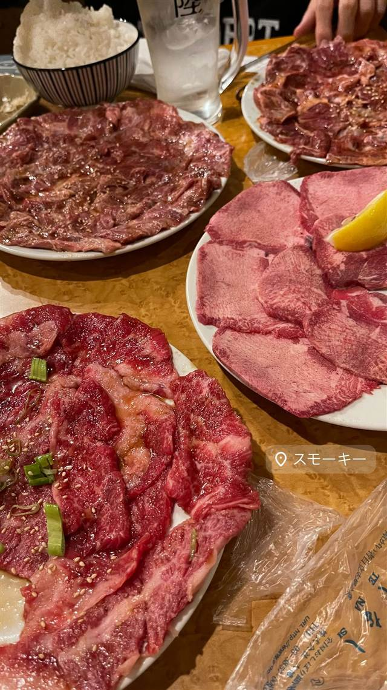

スモーキー（Smokey）
横浜の精肉卸が直営、肉屋の目利きが光る皿いっぱいカルビ
スモーキー
たまプラーザ駅近くの焼肉店。横浜の精肉卸「松本商店（マツモトミート）」が直営し、肉屋ならではの目利きで仕入れた肉を、安さとボリュームにこだわって提供している。看板は「皿いっぱいカルビ」。
TRIVIA
豆知識
- 最高級の食肉を扱う精肉卸「松本商店」が直営する焼肉店
REVIEWS
世間の評判
3.24食べログ
圧倒的なボリュームとコスパ
- 精肉店直営で肉の質が良く、ボリュームも圧倒的だという声が多い
- 大盛りキャベツが500円弱という安さと量で驚かれるという声が多い
- 週末は早い時間から満席になりやすく予約が必須だという声が多い
- 取り分け皿が出てこないなどスタッフ対応に課題を感じる声もある
食べログ 口コミ126件
| 系譜 | 横浜の精肉卸「株式会社松本商店（マツモトミート）」のグループ会社 |
|---|---|
| 看板 | 皿いっぱいカルビ、生肉盛り |
| こだわり | 精肉店直営ならではの仕入れルートを活かし、安さとボリュームにこだわる |
| どこから | 東京から1時間ほど |
| 営業時間 | 月 17:00-23:00 火 休み 水〜日 17:00-23:00 |
| 予算 | 夜 ¥2,000～¥2,999 |
| 定休日 | 火曜日 |
| 場所 | たまプラーザ 神奈川県横浜市青葉区美しが丘 |
| メモ | たまプラーザ駅徒歩3分、火曜定休、17:00〜24:00、人気店のため週末は予約推奨 |
食べたもの：焼肉の生肉盛り
NEARBY
近い店・同じ系統の店
-
 ★
焼肉 白金高輪駅
炭焼 金竜山
ロンドン帰りの店主夫妻が焼く上タン塩とシャトーブリアン
夜 ¥20,000～¥29,999
★
焼肉 白金高輪駅
炭焼 金竜山
ロンドン帰りの店主夫妻が焼く上タン塩とシャトーブリアン
夜 ¥20,000～¥29,999
-
 ★
焼肉 関内駅
関内苑 本店
韓国職人仕込みのキムチとA5和牛の手打ち冷麺
昼 ¥1,000～¥1,999
★
焼肉 関内駅
関内苑 本店
韓国職人仕込みのキムチとA5和牛の手打ち冷麺
昼 ¥1,000～¥1,999
-
 ★
焼肉 鶯谷駅
焼肉 鶯谷園
1968年創業、半世紀以上続く良心価格の厚切りタン
夜 ¥6,000～¥7,999
★
焼肉 鶯谷駅
焼肉 鶯谷園
1968年創業、半世紀以上続く良心価格の厚切りタン
夜 ¥6,000～¥7,999
-
 ★
焼肉 不動前
焼肉しみず
牛タンの中心部だけを使う厚切り黒毛和牛タン
夜 ¥10,000～¥14,999
★
焼肉 不動前
焼肉しみず
牛タンの中心部だけを使う厚切り黒毛和牛タン
夜 ¥10,000～¥14,999
-
 ★
焼肉 飯田橋駅
好ちゃん 飯田橋本店
食べログ百名店に6年連続選出されたホルモン焼肉
夜 ¥6,000～¥7,999
★
焼肉 飯田橋駅
好ちゃん 飯田橋本店
食べログ百名店に6年連続選出されたホルモン焼肉
夜 ¥6,000～¥7,999
-
 ★
焼肉 町屋
正泰苑 総本店
ザガット東京焼肉部門1位に輝いた熟成タン
夜 ¥6,000～¥7,999
★
焼肉 町屋
正泰苑 総本店
ザガット東京焼肉部門1位に輝いた熟成タン
夜 ¥6,000～¥7,999